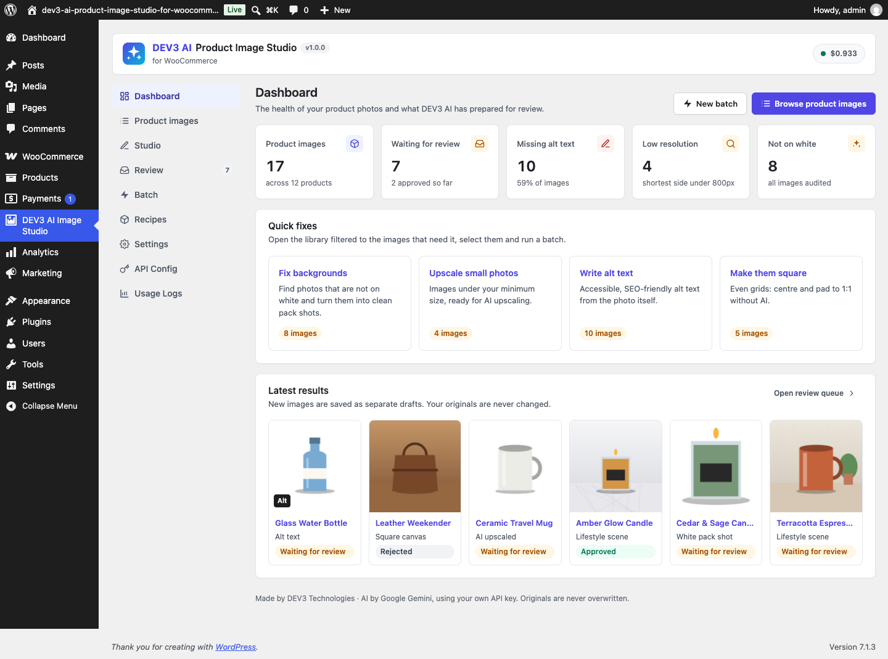
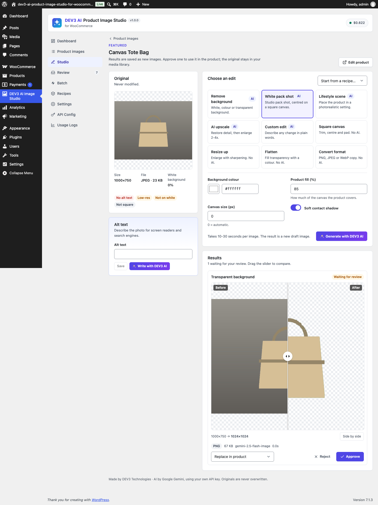
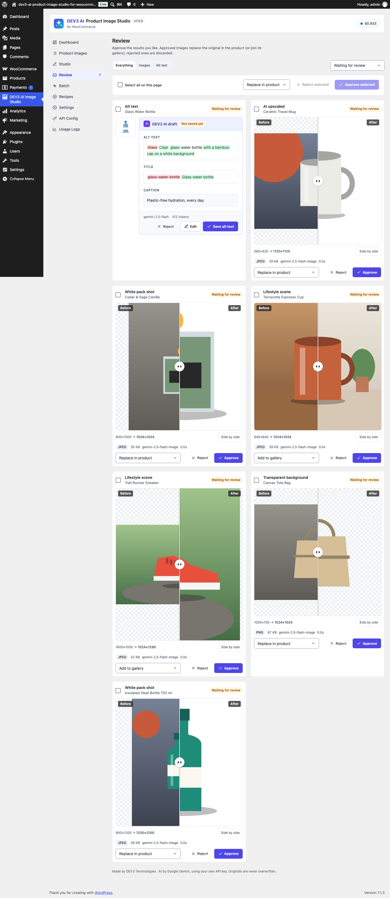
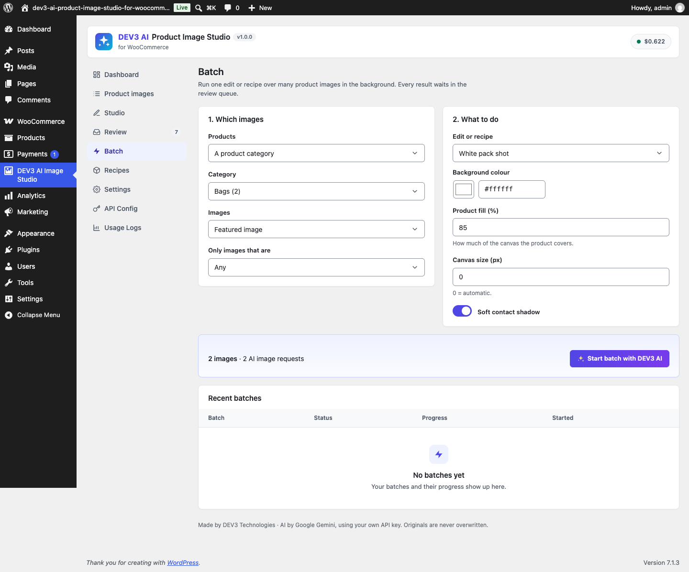
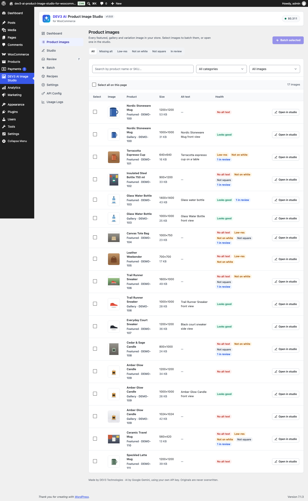
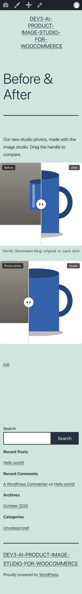

Installation
- Requirements: WordPress 6.0+, PHP 7.4+ (tested on 8.3) with the GD extension, WooCommerce 8.0+.
- Plugins › Add New › Upload Plugin, choose
dev3-ai-product-image-studio-for-woocommerce.zip, install and activate. - Open DEV3 AI Image Studio in the admin menu.
No licence key or activation is needed. Updates ship as new zips. HPOS and the Cart/Checkout blocks are declared compatible (the plugin does not touch orders or the cart).
Google Gemini API key
- Go to aistudio.google.com/apikey and create a key (Google account needed).
- In API Config paste the key and click Test connection. It is stored encrypted and never sent to the browser. You can instead define
DEV3IS_GEMINI_API_KEYinwp-config.php. - Image model:
gemini-2.5-flash-image(default). Text model for alt text and scene ideas:gemini-2.5-flash. - Set a monthly budget: AI pauses when the estimated cost reaches it. Usage Logs show requests, tokens and cost per feature.
Without a key the AI buttons are disabled, and everything else works: library, audit, square canvas, resize, flatten, convert, alt templates, review and batches of non-AI edits.
Quick start
- Open Product images › Not on white.
- Select a few images and click Batch, choose the recipe Marketplace white 1:1 and start.
- Open Review, drag the sliders, then Approve the results you like. They replace the images in the products.
Product images (library)
Lists every featured, gallery and variation image with product, slot, size, file size, alt text and health badges. Filters: Missing alt, Low-res (shortest side under the threshold in Settings, default 800 px), Not on white (border whiteness under 90%), Not square, In review. Search by product name or SKU, filter by category and image type. Tick images (or Select all on this page) and click Batch. Whiteness is measured once per image and cached; Audit all images measures the rest in the background.
Studio
Open any image from the library, the product edit screen, the Products list (Image Studio row link) or the media library. Left: the original (never modified), its size, file, whiteness and alt text. Right: pick an edit, set options (or start from a recipe) and run it. Every result appears below as a draft with a before/after slider (drag, touch or arrow keys) or side by side.
Edits
| Edit | AI | What it does | Options |
|---|---|---|---|
| Remove background | Yes | Keeps the product as is, new background. Transparent: the AI paints a key colour, then the plugin keys it out locally into a PNG with alpha (edge softening + spill removal). | White, colour, transparent |
| White pack shot | Yes | Studio pack shot, corrected light; then trimmed and centred on a square canvas. | Colour, fill %, canvas size, soft shadow |
| Lifestyle scene | Yes | Places the product in a photorealistic setting. Suggest scenes with DEV3 AI proposes 4 settings for the product. | Preset or description, aspect ratio, 1-4 variants |
| AI upscale | Yes | Restores detail and removes noise, then resamples to 2-4x (or a long edge), capped by Max image size. | Factor, long edge |
| Custom edit | Yes | Any change described in words. | Instruction |
| Square canvas | No | Trims the background, centres and pads to 1:1. | Colour or transparent, fill %, size |
| Resize up | No | Enlarges with a light sharpen. | Factor, long edge |
| Flatten | No | Fills transparency with a colour. | Colour |
| Convert format | No | PNG, JPEG or WebP copy. | Format, quality |
Results are named after the product (blue-mug-packshot.jpg) and titled "Product - Edit".
Review & approval
New results are hidden from the media library until approved (setting). Approve with:
- Replace in product: swaps the original for the result wherever the product uses it (featured, the same gallery position, variations). The original stays in the media library.
- Add to gallery (default for lifestyle scenes).
- Keep in library only.
Reject deletes the draft file (unless Keep files of rejected results is on). Revert puts the original back. Select several results to approve or reject them in bulk.
Batch mode
Choose the products (library selection, chosen products, a category or all products), the images (featured, gallery, variations, all), an optional health filter, and an edit or recipe. The screen shows how many images and AI requests it will make. Batches run in the background on Action Scheduler (bundled with WooCommerce) or WP-Cron, with progress, cancel, retry failed and resume. Batch-only operations: Alt text with DEV3 AI, Alt text from a template, Audit images. Every result waits in the review queue (Review results filters to that batch).
Recipes & scenes
A recipe is an edit with saved options. Built in: Marketplace white 1:1, Transparent PNG, Kitchen lifestyle 4:5, HD upscale 2x, Square pad (no AI). Add, edit or delete recipes and lifestyle scene presets on the Recipes screen; Restore built-ins resets both.
Alt text
- Write with DEV3 AI (studio): the photo, product name, category and attributes go to Gemini; you get alt (≤125 characters), title and caption as a draft with a diff. Accept, edit, regenerate or reject.
- Templates (no AI):
{product}{category}{sku}{site}{n}{attribute:pa_color}. Empty placeholders are tidied away. - Every saved alt text is logged and can be reverted. Language: Settings › Alt text language (empty = site language).
WooCommerce screens
- Product edit: "DEV3 AI Image Studio" side box with the product's images (badge = results waiting) and Batch edit all images.
- Products list: row link Image Studio and bulk action Edit images in DEV3 AI Image Studio.
- Media library: Open in DEV3 AI Image Studio in the attachment details.
Before & After block and shortcode
Add the Before & After Image block (Media category), pick two images, labels, start position and caption. Or use the shortcode:
[dev3is_compare before="123" after="456" position="50" before_label="Phone photo" after_label="Studio" caption="Same mug"]It loads ~1 KB of JS and ~3 KB of CSS only on pages that use it, works with mouse, touch and keyboard, and inherits your theme's fonts. Colours are CSS custom properties: --dev3is-line, --dev3is-knob, --dev3is-tag-bg, --dev3is-tag-fg, --dev3is-frame-bg, --dev3is-radius.
Settings
| Setting | Default |
|---|---|
| Default background colour | #ffffff |
| File format (auto = PNG when transparent, else JPEG; JPEG, PNG, WebP) | auto |
| JPEG / WebP quality | 90 |
| Pack shot fill % | 85 |
| Max image size | 2048 px |
| Low-resolution threshold | 800 px |
| Soft shadow on pack shots | on |
| Default approve action | Replace in product |
| Default batch images | Featured image |
| Hide unapproved results from the media library | on |
| Keep files of rejected results | off |
| Brand style for scenes, alt template, alt language | empty, {product} - {category}, site language |
Who can use it: users with manage_woocommerce + upload_files (administrators and shop managers). Settings, API Config and Usage Logs need manage_options.
Hooks
| Hook | Type | Use |
|---|---|---|
dev3is_studio_capability | filter | Capability for the studio (default manage_woocommerce). |
dev3is_operation_prompt | filter | (prompt, op, options, product_id) Prompt sent to the image model. |
dev3is_scene_presets / dev3is_recipes_defaults | filter | Built-in scenes / recipes. |
dev3is_result_filename | filter | (name, product_id, op) File name of new results. |
dev3is_audit_low_res | filter | Low-resolution threshold in px. |
dev3is_alt_template_vars | filter | (vars, product_id) Template placeholders. |
dev3is_chroma_tolerance | filter | Colour distance keyed out for transparent backgrounds (default 110). |
dev3is_max_input_side | filter | Longest side of the photo sent to the AI (default 1536). |
dev3is_prompt_alt_text, dev3is_prompt_scene_ideas | filter | Text prompt templates. |
dev3is_result_created, dev3is_result_approved (result, mode), dev3is_result_rejected, dev3is_result_reverted | action | Workflow events. |
dev3is_job_finished_dev3is_batch | action | A batch finished. |
| Core hooks | filter | Shared AI core hooks: dev3is_ai_guard, dev3is_model_prices, dev3is_privacy_policy_text. |
REST API (/wp-json/dev3is/v1, cookie auth + nonce)
| Route | Purpose |
|---|---|
GET bootstrap | Settings, recipes, stats, counts, AI status |
GET images, GET images/<id> | Library (filter, search, category, scope, page) / one image with history |
POST process | Run an edit: attachment_id, product_id, slot, operation, options or recipe |
POST alt/suggest, alt/apply, alt/template | Alt text draft / save / template preview or apply |
POST scenes/ideas | AI scene suggestions for a product |
GET results; POST results/<id>/approve|reject|revert; POST results/bulk | Review queue |
POST batch (dry_run to count), GET batches, core GET jobs/<id> | Batches |
POST recipes, POST recipes/reset | Recipes and scenes |
FAQ
Are my originals changed?
Never. Results are new files; approval only changes which attachment the product uses.
Why is the AI result about 1024 px?
Image models return roughly one megapixel. Pack shots and upscales are resized on your server to the size you choose (up to Max image size).
The batch seems slow.
Each AI edit takes 10-30 seconds. Batches run in the background; if WP-Cron is disabled they still advance while the batch screen is open.
"AI paused: monthly budget reached"
Raise or clear the budget in API Config, or wait for the next month.
Which data leaves my site?
Only for AI edits: the image (max 1536 px) and product name; for alt text also category and attributes. Turn on PII masking in API Config to mask emails/phone numbers in prompts.
Uninstall
With Delete data on uninstall on (API Config), the results table, settings and recipes are removed. Result images in the media library are kept because products may use them.
Changelog
1.0.0 · Initial release.